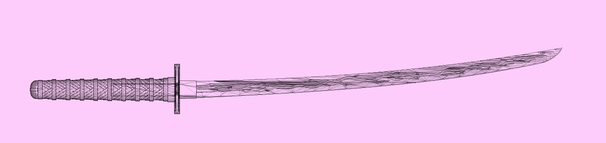

ŌdachiVR
ŌdachiVR is the organization I created that is designed to create applications that take full advantage of VR, and share them with world. It is currently focused on creating solid foundations for virtual reality, instead of profit. You can check out the sidequest page here. The first app is designed around creating tracable holograms for art!
